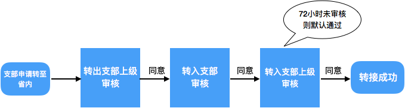

组织关系接转发生在团员隶属组织发生变动时，如升学、就业等，转接时需要准确填写您将要去往的学习/工作单位。转接的范围有以下二类情况：
1. 转至广东省内组织：
转出至非共青团广东省委所辖的团组织，需四个组织审核：转出、转入团支部及它们的直接上级组织。团支部手动同意转出/转入后，直接上级团组织审核，四个组织均通过后则转接完成，若任一组织拒绝，则需重走流程。转接前后团员均可正常使用广东“智慧团建”系统。
2. 转至非共青团广东省委所辖的团组织：
转出至非共青团广东省委所辖的团组织，需两个组织审核：团支部及其直接上级。团支部审核通过后，直接上级团组织审核，通过后则转出完成，该团员将无法再使用广东“智慧团建”系统办理相关业务，请谨慎操作。PS：目前该权限暂未对组织开放，可由团员本人申请。
3. 退回原籍：
团组织可对选定的团员进行一键“退回原籍”操作，系统自动申请将团员转至原籍（报到所填区县）的区县团支部。转接流程与一般流程逻辑一致，省内团员需原籍组织同意接收方可转接成功。PS：中山、东莞的退回原籍团支部直属于团市委，非共青团广东省委所辖的团组织团员退回非共青团广东省委所辖的团组织。
更多业务上的规范指引，请留意相关的说明文件。